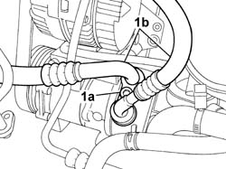
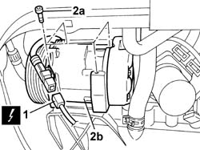
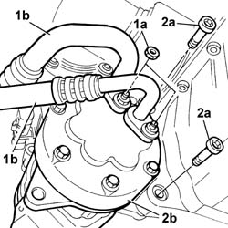
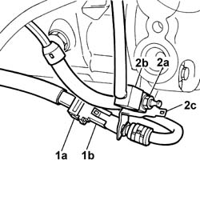
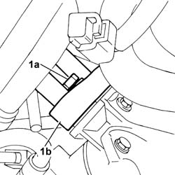
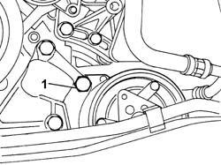
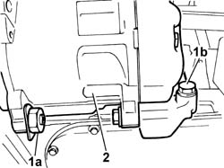

5040A20 AIR CONDITIONER COMPRESSOR - R+R - INCLUDES FLUID LEVEL CHECK AND TOP UP IF NECESSARY
- Path
- Procedures > 50 AUXILIARY UNITS > 5040 AIR CONDITIONING CASING AND COMPONENTS > 5040A CHECKING OPERATION OF AIR CONDITIONER (TEMPERATURE) > 5040A20 AIR CONDITIONER COMPRESSOR - R+R - INCLUDES FLUID LEVEL CHECK AND TOP UP IF NECESSARY
- Kind
- repair procedure (removal / refitting; the operation number is the code)
- Applies to
- all engines; all production periods
- Interactive page
- https://sloeber94.github.io/elrnDB-fUlss/en/#/179007460
Applies to: engines: 2.0 16v; all production periods
 Removing
Removing
 Refitting
RefittingOp. 0010T84 COOLANT FOR AIR CONDITIONING SYSTEM DEHYDRATE AND RECHARGE
Op. 4450B04 RIGHT FRONT WHEEL R R
Op. 7055B91 RIGHT FRONT WHEEL ARCH LINER - R.R.
Op. 4410D16 BRACKET (ONE) RETAINING CHASSIS TO BODY - R R
[Rightt side, front]
Op. 1092G10 SINGLE ENGINE BELT R R
1. Undo the fixing bolt (1a) and move the pipes (1b) aside.

Applies to: engines: 2.0 16v; all production periods
Op. 7055B54 UNDER-ENGINE GUARD - R R
1. Disconnect the electrical connection for the compressor.
2. Undo retaining bolts (2a) and remove compressor (2b).

Applies to: engines: 2.0 16v; all production periods
Refitting
RemovingFit the compressor in place and tighten the retaining bolts to torque.
Value daNm | Fastening | Component | Ø | |
|---|---|---|---|---|
. | 2,5 | Bolt | AIR CONDITIONER ASSEMBLY COMPRESSOR | - |
Connect the electrical connection for the compressor.
Op. 7055B54 UNDER-ENGINE GUARD - R R
Tighten the bolt fixing the compressor pipes to torque.
Op. 1092G10 SINGLE ENGINE BELT R R
Op. 4410D16 BRACKET (ONE) RETAINING CHASSIS TO BODY - R R
[Right side, front]
Op. 7055B91 RIGHT FRONT WHEEL ARCH LINER - R.R.
Op. 4450B04 RIGHT FRONT WHEEL R R
Op. 0010T84 COOLANT FOR AIR CONDITIONING SYSTEM DEHYDRATE AND RECHARGE
Applies to: engines: 2.0 16V JTD, 2.2 16V JTD; all production periods
Removing
RefittingOp. 5530B56 BATTERY DRIP TRAY COVER - R.R.
Disconnect the negative battery terminal.
Position the vehicle on a lift.
Raise the vehicle.
Op. 4450B04 RIGHT FRONT WHEEL R R
Op. 7055B91 RIGHT FRONT WHEEL ARCH LINER - R.R.
Op. 7055B54 UNDER-ENGINE GUARD - R R
Op. 1092G10 SINGLE ENGINE BELT R R
Op. 1092G20 ENGINE COMPONENT SINGLE BELT FIXED TENSIONER - ONE - R + R
Op. 0010T84 COOLANT FOR AIR CONDITIONING SYSTEM DEHYDRATE AND RECHARGE
1. Undo the fixing nuts (1a) and move the pipes (1b) away from the work area.
Disconnect the electrical connection for the compressor.
2. Undo the bolts (2a) fixing the compressor to the engine oil sump and remove the compressor (2b).

Applies to: engines: 2.0 16V JTD, 2.2 16V JTD; all production periods
Refitting
RemovingFit the compressor in place and tighten the fixing bolts checking the torque.
Value in da Nm | Fastening | Component | Ø | |
|---|---|---|---|---|
4,2 ± 0,6 | Bolt | Compressor | - |
Connect the air conditioning pipes to the compressor and tighten the fixing nuts.
Value in da Nm | Fastening | Component | Ø | |
|---|---|---|---|---|
2,5 | Bolt | Compressor pipes | - |
Connect the electrical connection for the compressor.
Op. 1092G20 ENGINE COMPONENT SINGLE BELT FIXED TENSIONER - ONE - R + R
Op. 1092G10 SINGLE ENGINE BELT R R
Op. 7055B54 UNDER-ENGINE GUARD - R R
Op. 7055B91 RIGHT FRONT WHEEL ARCH LINER - R.R.
Op. 4450B04 RIGHT FRONT WHEEL R R
Op. 0010T84 COOLANT FOR AIR CONDITIONING SYSTEM DEHYDRATE AND RECHARGE
Lower the vehicle and remove from the lift.
Connect the negative battery terminal.
Applies to: engines: 3.0 24V V6; all production periods
Removing
RefittingPosition the vehicle on a lift.
Disconnect the negative battery terminal.
Description | Connector | |
|---|---|---|
. | Battery | A001B |
Op. 0010T84 COOLANT FOR AIR CONDITIONING SYSTEM DEHYDRATE AND RECHARGE
Op. 4450B04 RIGHT FRONT WHEEL R R
Op. 7055B91 RIGHT FRONT WHEEL ARCH LINER - R.R.
Op. 4410D16 BRACKET (ONE) RETAINING CHASSIS TO BODY - R R
Vedere in Op. 1092G10
1. Disconnect the electrical connection (1a) from the wiring on the compressor (1b)
Description | Connector | |
|---|---|---|
1a | Air conditioning compressor engagement electro-magnet | L020 |
2. Undo the fixing nut (2a) and disconnect the earth lead (2b) from the compressor and remove the wiring mounting bracket (2c).
Description | Connector | |
|---|---|---|
2b | Air conditioning unit earth | C016 |

Applies to: engines: 3.0 24V V6; all production periods
1. Undo the fixing bolt (1a) and disconnect the pipes (1b) from the compressor.
Plug the end of the pipes and seats on the compressor.

Applies to: engines: 3.0 24V V6; all production periods
1. Undo the upper bolt fixing the compressor to the timing side bracket

Applies to: engines: 3.0 24V V6; all production periods
1. Undo the lower fixing bolt (1a) on the timing side bracket and the (2) bolts (1b) fixing the flywheel side compressor mounting
2. Remove the air conditioning system compressor from the engine.

Applies to: engines: 3.0 24V V6; all production periods
Refitting
RemovingPosition the air conditioner compressor, tightening both flywheel bolts (2) and tighten to the specified torque.
Value daNm | Fastening | Component | Ø | |
|---|---|---|---|---|
. | 4 | Bolts | AIR CONDITIONING COMPRESSOR - R.R. |
Tighten the bolts securing the air conditioning compressor to the timing side bracket and tighten to the specified torque.
Value daNm | Fastening | Component | Ø | |
|---|---|---|---|---|
. | 4 | Bolts | AIR CONDITIONING COMPRESSOR - R.R. |
Replace the seals at the end of the pipes.
Remove the protective plugs, position the end of the pipes on the compressor and tighten the bolt.
Position the wiring bracket, connect the earth lead to the compressor and tighten the nut.
Description | Connector | |
|---|---|---|
. | Air conditioning unit earth | C016 |
Connect the compressor engagement electromagnet electrical connection.
Description | Connector | |
|---|---|---|
. | Air conditioning compressor engagement electro-magnet | L020 |
Vedere in Op. 1092G10
Op. 4410D16 BRACKET (ONE) RETAINING CHASSIS TO BODY - R R
Op. 7055B91 RIGHT FRONT WHEEL ARCH LINER - R.R.
Op. 4450B04 RIGHT FRONT WHEEL R R
Op. 0010T84 COOLANT FOR AIR CONDITIONING SYSTEM DEHYDRATE AND RECHARGE
Connect the negative battery terminal.
Description | Connector | |
|---|---|---|
. | Battery | A001B |
Remove the vehicle from the lift.
Topics linked from this page (8)
- 0010T84 COOLANT FOR AIR CONDITIONING SYSTEM DEHYDRATE AND RECHARGE
- 1092G10 SINGLE ENGINE BELT R R
- 1092G20 ENGINE COMPONENT SINGLE BELT FIXED TENSIONER - ONE - R + R
- 4410D16 BRACKET (ONE) RETAINING CHASSIS TO BODY - R R
- 4450B04 RIGHT FRONT WHEEL R R
- 5530B56 BATTERY DRIP TRAY COVER - R.R.
- 7055B54 UNDER-ENGINE GUARD - R R
- 7055B91 RIGHT FRONT WHEEL ARCH LINER - R.R.